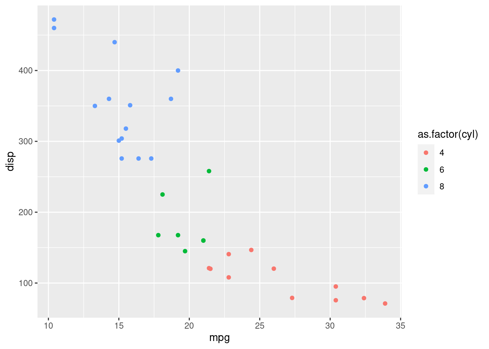

This is an R Markdown document. Markdown is a simple formatting syntax for authoring HTML, PDF, and MS Word documents. For more details on using R Markdown see http://rmarkdown.rstudio.com.
When you click the Knit button a document will be generated that includes both content as well as the output of any embedded R code chunks within the document. You can embed an R code chunk like this:
summary(cars)## speed dist
## Min. : 4.0 Min. : 2.00
## 1st Qu.:12.0 1st Qu.: 26.00
## Median :15.0 Median : 36.00
## Mean :15.4 Mean : 42.98
## 3rd Qu.:19.0 3rd Qu.: 56.00
## Max. :25.0 Max. :120.00You can also embed plots, for example:

Note that the echo = FALSE parameter was added to the code chunk to prevent printing of the R code that generated the plot.
The GHA workflow maintains cached knitr results between subsequent runs to reduce runtime. Caching can be enabled by specifying cache=TRUE in the code chunk header.
Note that this should be used with caution, as caches may become invalid when code is changed, potentially leading to unsuspected results.
## Run with caching enabled
Sys.time()## [1] "2021-09-22 07:17:19 UTC"Session info
## [1] "2021-09-22 07:17:19 UTC"## ─ Session info ───────────────────────────────────────────────────────────────
## setting value
## version R version 4.1.1 (2021-08-10)
## os macOS Catalina 10.15.7
## system x86_64, darwin17.0
## ui X11
## language (EN)
## collate en_US.UTF-8
## ctype en_US.UTF-8
## tz UTC
## date 2021-09-22
##
## ─ Packages ───────────────────────────────────────────────────────────────────
## ! package * version date lib source
## P cli 3.0.1 2021-07-17 [?] CRAN (R 4.1.0)
## P codetools 0.2-18 2020-11-04 [?] CRAN (R 4.1.1)
## P colorspace 2.0-2 2021-06-24 [?] CRAN (R 4.1.0)
## P crayon 1.4.1 2021-02-08 [?] CRAN (R 4.1.0)
## P digest 0.6.27 2020-10-24 [?] CRAN (R 4.1.0)
## P ellipsis 0.3.2 2021-04-29 [?] standard (@0.3.2)
## P evaluate 0.14 2019-05-28 [?] CRAN (R 4.1.0)
## P fansi 0.5.0 2021-05-25 [?] CRAN (R 4.1.0)
## P farver 2.1.0 2021-02-28 [?] CRAN (R 4.1.0)
## P fastmap 1.1.0 2021-01-25 [?] CRAN (R 4.1.0)
## P ggplot2 * 3.3.5 2021-06-25 [?] CRAN (R 4.1.0)
## P glue 1.4.2 2020-08-27 [?] CRAN (R 4.1.0)
## P gtable 0.3.0 2019-03-25 [?] CRAN (R 4.1.0)
## P highr 0.9 2021-04-16 [?] CRAN (R 4.1.0)
## P htmltools 0.5.2 2021-08-25 [?] CRAN (R 4.1.0)
## P knitr 1.33 2021-04-24 [?] CRAN (R 4.1.0)
## P labeling 0.4.2 2020-10-20 [?] CRAN (R 4.1.0)
## P lifecycle 1.0.0 2021-02-15 [?] CRAN (R 4.1.0)
## P magrittr 2.0.1 2020-11-17 [?] CRAN (R 4.1.0)
## P munsell 0.5.0 2018-06-12 [?] CRAN (R 4.1.0)
## P pillar 1.6.2 2021-07-29 [?] CRAN (R 4.1.0)
## P pkgconfig 2.0.3 2021-09-22 [?] Github (r-lib/pkgconfig@b81ae03)
## P R6 2.5.1 2021-08-19 [?] CRAN (R 4.1.0)
## P renv 0.14.0 2021-07-21 [?] CRAN (R 4.1.0)
## P rlang 0.4.11 2021-04-30 [?] CRAN (R 4.1.0)
## P rmarkdown 2.10 2021-08-06 [?] CRAN (R 4.1.1)
## P scales 1.1.1 2020-05-11 [?] CRAN (R 4.1.0)
## P sessioninfo 1.1.1 2018-11-05 [?] CRAN (R 4.1.0)
## P stringi 1.7.4 2021-08-25 [?] CRAN (R 4.1.0)
## P stringr 1.4.0 2019-02-10 [?] CRAN (R 4.1.0)
## P tibble 3.1.4 2021-08-25 [?] CRAN (R 4.1.0)
## P utf8 1.2.2 2021-07-24 [?] CRAN (R 4.1.0)
## P vctrs 0.3.8 2021-04-29 [?] standard (@0.3.8)
## P withr 2.4.2 2021-04-18 [?] CRAN (R 4.1.0)
## P xfun 0.25 2021-08-06 [?] CRAN (R 4.1.1)
## P yaml 2.2.1 2020-02-01 [?] CRAN (R 4.1.0)
##
## [1] /Users/runner/work/Rmd-website/Rmd-website/renv/library/R-4.1/x86_64-apple-darwin17.0
## [2] /private/var/folders/24/8k48jl6d249_n_qfxwsl6xvm0000gn/T/RtmpcxHimd/renv-system-library
##
## P ── Loaded and on-disk path mismatch.